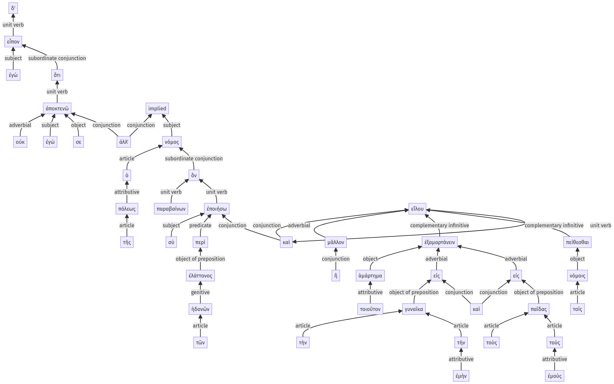

Lysias, Oration 1, 1.25.39-1.26.37a
1.25.26-1.25.38a |
Sentence 72
1.25.39-1.26.37a
ἐγὼ δ' εἶπον ὅτι "οὐκ ἐγώ σε ἀποκτενῶ, ἀλλ' ὁ τῆς πόλεως νόμος, ὃν σὺ παραβαίνων περὶ ἐλάττονος τῶν ἡδονῶν ἐποιήσω, καὶ μᾶλλον εἵλου τοιοῦτον ἁμάρτημα ἐξαμαρτάνειν εἰς τὴν γυναῖκα τὴν ἐμὴν καὶ εἰς τοὺς παῖδας τοὺς ἐμοὺς ἢ τοῖς νόμοις πείθεσθαι καὶ κόσμιος εἶναι".
1 ἐγὼ εἶπον ὅτι
2 οὐκ ἐγώ σε ἀποκτενῶ
2 ἀλλ' ὁ τῆς πόλεως νόμος
3 ὃν σὺ
4 παραβαίνων
3 περὶ ἐλάττονος τῶν ἡδονῶν ἐποιήσω
4 καὶ μᾶλλον εἵλου τοιοῦτον ἁμάρτημα ἐξαμαρτάνειν εἰς τὴν γυναῖκα τὴν ἐμὴν καὶ εἰς τοὺς παῖδας τοὺς ἐμοὺς ἢ τοῖς νόμοις πείθεσθαι καὶ κόσμιος εἶναι
ἐγὼ δ' εἶπον ὅτι "οὐκ ἐγώ σε ἀποκτενῶ, ἀλλ' ὁ τῆς πόλεως νόμος, ὃν σὺ παραβαίνων περὶ ἐλάττονος τῶν ἡδονῶν ἐποιήσω, καὶ μᾶλλον εἵλου τοιοῦτον ἁμάρτημα ἐξαμαρτάνειν εἰς τὴν γυναῖκα τὴν ἐμὴν καὶ εἰς τοὺς παῖδας τοὺς ἐμοὺς ἢ τοῖς νόμοις πείθεσθαι καὶ κόσμιος εἶναι".
Highlighting:
- connecting words
- unit verb
- subject
- object
Color code:
- independent clause (level 1, transitive verb)
- quote (level 2, transitive verb)
- quote (level 2, transitive verb)
- subordinate clause (level 3, transitive verb)
- circumstantial participle (level 4, transitive verb)
- subordinate clause (level 4, transitive verb)
